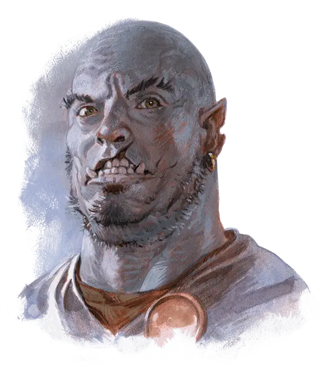

Храббоз
Hrabbaz
Средний Гуманоид (Полуорк), нейтрально-злой, именной НИП

Класс Доспеха 12
Хиты 112 (15к8 + 45)
Скорость 30 футов
| мод | спас | ||
|---|---|---|---|
| СИЛ | 20 | +5 | +8 |
| ЛОВ | 15 | +2 | +2 |
| ТЕЛ | 17 | +3 | +6 |
| мод | спас | ||
|---|---|---|---|
| ИНТ | 10 | +0 | +0 |
| МДР | 14 | +2 | +2 |
| ХАР | 12 | +1 | +1 |
Навыки Атлетика +8, Восприятие +5, Запугивание +4
Чувства тёмное зрение 60 футов, пассивное Восприятие 15
Языки Общий, Орочий
Опасность 5 (1800 опыта)
Бонус мастерства +3
Особенности
Непоколебимая стойкость (перезарядка после продолжительного отдыха). Если хиты Храббоза опускаются до нуля, но при этом он не убит, его хиты вместо этого опускаются до 1. Он не можете использовать это умение снова, пока не закончит продолжительный отдых.
Упорный (2/день). Храббоз может перебросить проваленный спасбросок, и обязан использовать новый результат.
Дополнительный урон. Если у Храббоза остаётся больше половины его хитов, он дополнительно наносит 3 (1к6) урона при каждом попадании.
Действия
Мультиатака. Храббоз совершает три атаки моргенштерном.
Моргенштерн. Рукопашная атака оружием: +8 к попаданию, досягаемость 5 футов, одна цель. Попадание: 9 (1к8 + 5) колющего урона.
Описание
Храббоз— мускулистый полуорк с расщеплённой челюстью, который служит телохранителем лорда и леди Гролхунд. Он хорошо воспитан и изысканно одет — но под этим приятным обликом скрывается сердце убийцы.
Леди Ялу Гролхунд он уважает, а вот её мужа-нытика недолюбливает и был бы не против, если бы Оронда немного проучили.